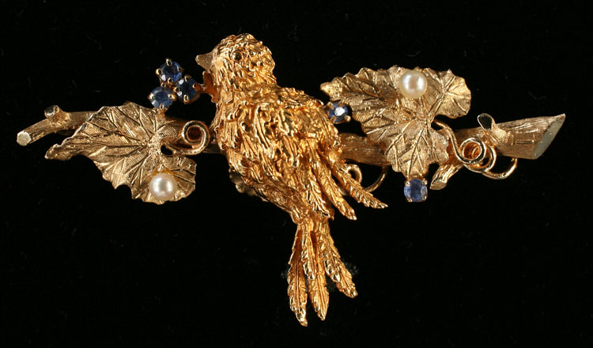

|
Most Thursday’s, year round Francine provides free verbal appraisals for items brought to our shop. We do ask that you call first, 207-843-7449, to make sure Francine is going to be available. Francine has over 45 years of experience buying and selling antiques and has a tremendous knowledge of antiques and their respective values. For the occasional item that “stumps her” she will research the item or will recommend you to someone that knows that specific category better than she, or simply say: “I don’t know” - which is extremely unusual. 
SHOP HOURS June 1st - October 15th
— Wednesday thru Saturday 10AM - 5PM Fine Period Furniture: Queen Ann Thru American Country
We Are
Always Interested In Buying Single Items to Complete
Estates of |